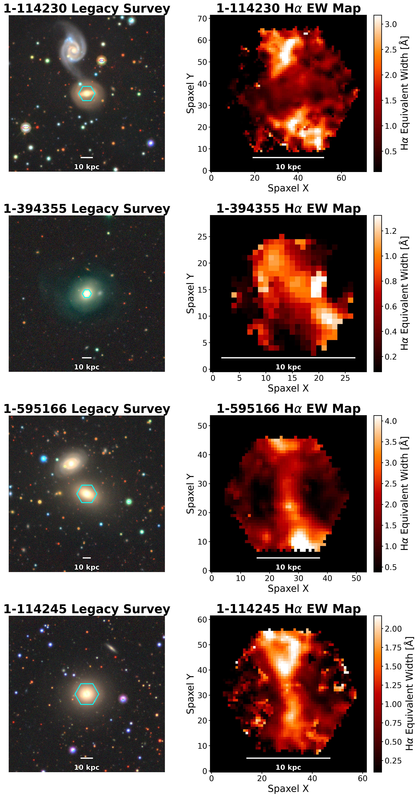
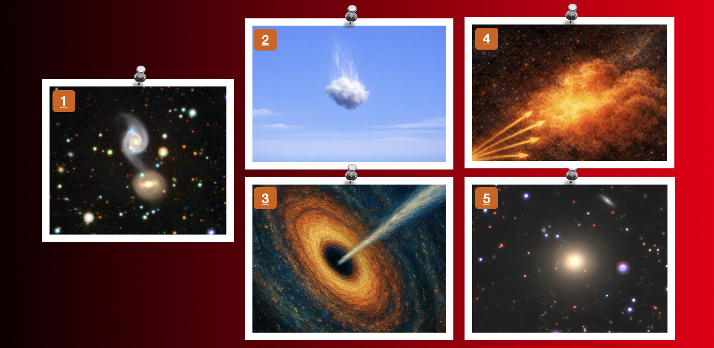
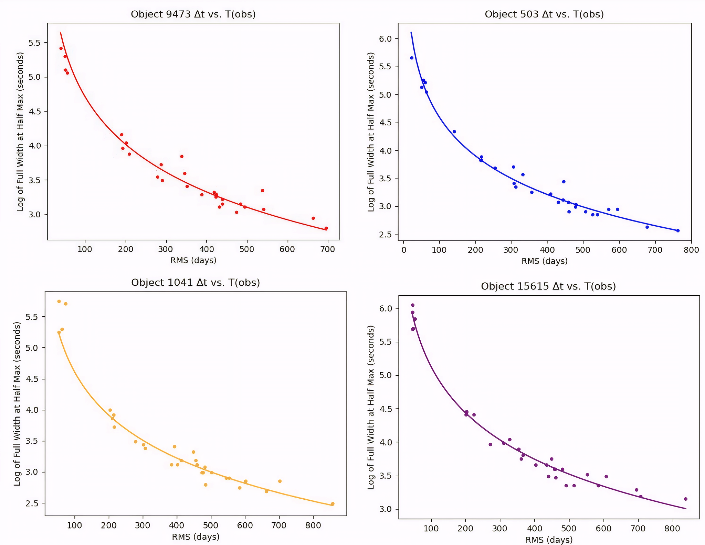

Research

AAS Press Conference · January 2026
Current Research · June 2024 – Present · Johns Hopkins University
Galactic Rain: Cool Gas Inflows in Red Geyser Galaxies

One of the central puzzles in modern astronomy is understanding why some galaxies stop forming stars and, more importantly, how they stay quiet for billions of years, even when they still contain gas that could in principle form new stars. Red geysers are a class of massive (log[M/M☉] ≈ 10.5) quiescent galaxies with large-scale, weak, bi-symmetric ionized gas outflows, interpreted as signatures of ongoing low-level AGN feedback. The question that I try to answer in my research is the following: what fuels and sustains the AGN activity in the center?
I led an investigation on the mechanisms of quiescence by mapping the cool and warm interstellar gas (traced by Na I D and Ca II absorption) in 140 red geyser galaxies at z ~ 0.04. Using spatially resolved spectra from the SDSS-IV MaNGA survey, I fit double-Gaussian profiles to the Na I D doublet to measure spatially resolved velocities and velocity dispersions. I find that about 70% of the cool gas shows inflow signatures, with a median velocity of ~47 km/s, roughly 10% of the expected free-fall speed. So, if we are seeing all of this inflow, could they be feeding the supermassive black hole in the center? What's really intriguing is that I show that red geysers with ongoing AGN activity (detected in radio), have inflowing cool gas reservoirs ~7 times larger than their non-radio counterparts.
Seeing all these inflows, we then sought to better understand the origins of this gas. Could they be accreted through nearby neighbors? I show that red geysers interacting with nearby companions, showing signs of past mergers, or with close neighbors, have inflowing gas reservoirs about 2.7 times larger than isolated systems.
These results support a self-regulating cycle: galaxy interactions deliver cool gas, which "rains" inward and feeds the AGN; the AGN heats the surrounding gas; star formation continues to be suppressed. Quiescence is not a one-time event but an actively maintained state. This work produced two first-author papers (one in prep.), a Best Undergraduate Research Poster award at the APS regional meeting, and the Goldwater Scholarship. I was also 1 of 32 researchers from over 2,900 attendees invited to the 247th AAS Press Conference in January 2026.

Feedback cycle. Interactions supply cool gas (1-2), which rains inward to fuel the AGN (3). Black hole feedback heats surrounding gas (4), keeping the galaxy quiescent (5).


Peer Mentor · January 2025 – June 2025 · UC Santa Cruz
Quantifying Confidence in Spectral Features
I served as peer mentor to a team of four first-year astrophysics undergraduates, guiding them through applying statistical tools to real observational data from the Hubble Space Telescope (HST) and the James Webb Space Telescope (JWST).
A key challenge in spectroscopy is deciding whether a spectral feature is a real signal or just noise. I developed Gaussian fitting routines and chi-squared tests to assess the statistical significance of emission and absorption lines in noisy HST and JWST spectra, and taught the team to apply these methods to their own datasets. Students gained hands-on experience going from raw spectra to quantitative confidence statements.

Mentees presenting their work at the UC Santa Cruz ASTR 9 Research Symposium.

Previous Research · January 2024 – June 2024 · UC Santa Cruz
Modelling the Torus of Hot Jupiters: Where To Look For Them?
Placeholder - add a figure from your torus modeling work here.
Hot Jupiters are gas giant exoplanets on very close-in orbits. They receive intense radiation from their host stars, which can drive atmospheric escape and may form a diffuse plasma torus along the planet's orbital path. Detecting this torus would give a direct measurement of atmospheric mass-loss rates.
I built a forward model to predict whether this torus could be detected, as a function of stellar mass, stellar radius, gas temperature, orbital distance, and ionizing flux. The model simulates expected spectra and the resulting absorption lines, and outputs the probability of a torus detection for any given system. It can rank candidate Hot Jupiter systems by detectability, helping focus telescope time on the most promising targets. Findings were presented at the UC Santa Cruz ASTR 9 Research Symposium.

Previous Research · June 2023 – August 2023 · UC Santa Cruz
Dependence of the Periodogram Peak Width of Variable Stars on Observational and Light Curve Parameters
RR Lyrae are pulsating stars with a well-defined light curve shape and a tight period-luminosity relation in the i-band. This makes them excellent standard candles and tracers of Galactic structure. Precise period determination is essential for using them, so understanding what controls that precision matters.
Through the Science Internship Program (SIP) at UC Santa Cruz (top 9% of applicants), I searched for new RR Lyrae in the Canada-France-Hawaii Telescope Legacy Survey (CFHTLS) using the Lomb-Scargle periodogram and the Phase Distance Correlation method. I also tested a heuristic formula that predicts the FWHM of the Generalized Lomb-Scargle periodogram peak. The formula depends on five parameters: the star's period, light curve amplitude and slope, photometric precision, number of measurements, and time baseline.
Using six-filter photometry from the CFHTLS Deep Fields over nearly a decade, I validated the formula across a wide parameter range. It tells observers how finely to sample period space when searching for RR Lyrae, and applies to any time-domain survey including the upcoming Vera C. Rubin Observatory / LSST.

Periodogram peak width as a function of time baseline.